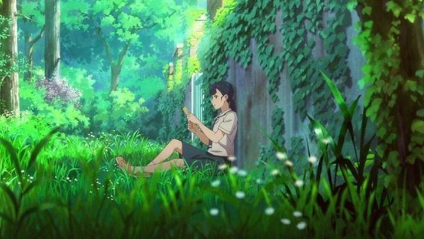

OIAF 2024 hosted a cultural screening of "Your Letter," based on a popular Korean webtoon comic I hadn't heard of. After the fact, I was surprised to hear this was the WORLD PREMIERE, that not even a trailer of the film had released yet. Lucky me for having seen it! At first glance, most would assume it was Japanese anime based on the character designs, animation style, and plot. If it walks like an anime and talks like an anime, is it anime? They call Korean comics "manhwa," not "manga," so I'm sure South Korea has their own name for animated cartoons, and I'd like to respect the country by not calling this "anime." That said, fans of anime are in for a treat with this film.The story revolves around So-Ri, a girl who becomes the central target of the school's bullies when she stands up for another victim. Both support each other, until So-Ri learns the friend is moving away. So-Ri transfers schools as well, hoping that the new setting would help her escape, but her anxieties still haunt her. However, she finds a mysterious letter taped to the roof of her school desk at the back of the class... it's a welcome letter, with guides showing a map of the grounds and summaries of the staff. And it has a hint on where to find a second letter. Which has a hint to find a third. This treasure hunt distracts So-Ri from her troubles, and even helps her find new friends to confide in. It's easy to guess that the letters came from a prior student, but who? And what happened to them? When she meets an old friend of the prior student, and continues finding letters until the end with him, the mystery slowly unravels. Writing letters in advance and sending them to someone special has been done before, and is a little corny. But for a high-school drama, it works plenty. There's a number of twists regarding the mysterious author, and without spoling too much, I was almost in tears to see a surprise chance for a happy ending. It's all written and directed well, not unlike Makoto Shinkai's "Your Name." in its storytelling. The one sore spot is the subject of bullying: it's an important message, but it isn't easy to watch some aggressive ne'er do-wells seemingly get away without consquence. The story has one main bully that only really factors in a character's backstory, and late in the current story, and thankfully they get what's coming to them at the end, allowing us to imagine them as the villain we love to hate. If there's anything to fault in the story, it's that the emotional journey feels all too derivative to dozens of other anime I've seen... which strangely doesn't bother me as much when I watch other derivative anime... Early teaser trailers for the webtoon don't do justice to the final film. "Your Letter" looks good. Characters are attractive, the school setting is diverse, and everything is moderately colourful. By anime standards, this is all just fine and to be expected, which explains my moderate score. But consider how many times other countries have tried, but failed, to emulate Japan's successful and recognizable anime style. For it to turn out as well as this is an impressive feat! Speaking of which, other than the characters speaking Korean, it's not immediately clear to me that this is set in Korea rather than Japan, especially with the similar school uniforms... someone more knowledgeable can address that.  Voice acting (I heard the original Korean dub in my version) and music are similarly solid, bright and cheerful, and portraying other emotions when needed. Like the visuals, not only does it work well, it's marketable, easy to convince a wider audience that it's great entertainment. Seeing this at OIAF, a festival that focuses on independent, lower budget animation you'd likely never see otherwise, was a breath of fresh air. I don't think the whole world should be producing anime-styled animation, but South Korea produced a winner with "Your Letter." It's bound to be a crowdpleaser, and is a great advertisement for WebToons.com, where you can read the entire original comic online for free!
- "Ani" More reviews can be found at : https://2danicritic.github.io/ Previous review: review_Yellow_Submarine Next review: review_Your_Name.